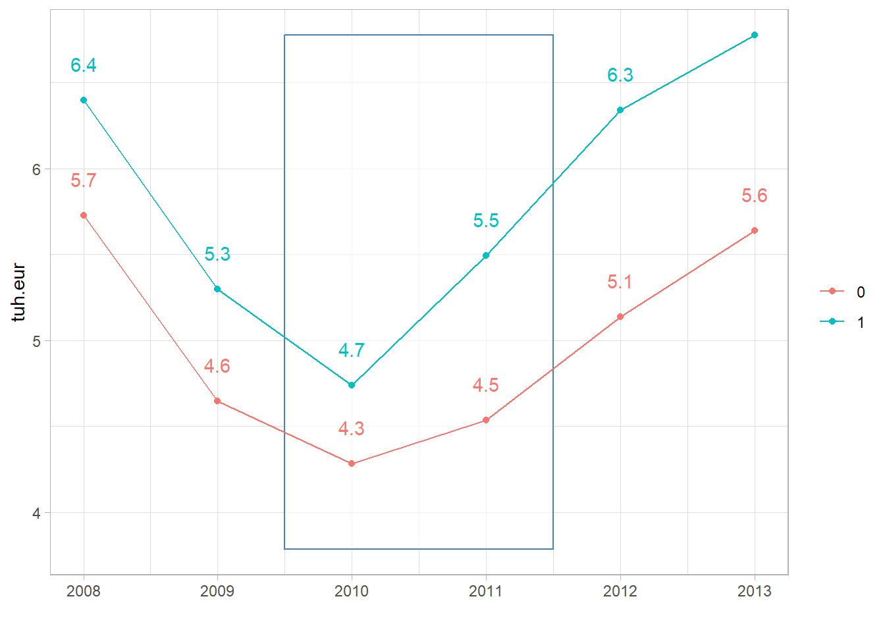
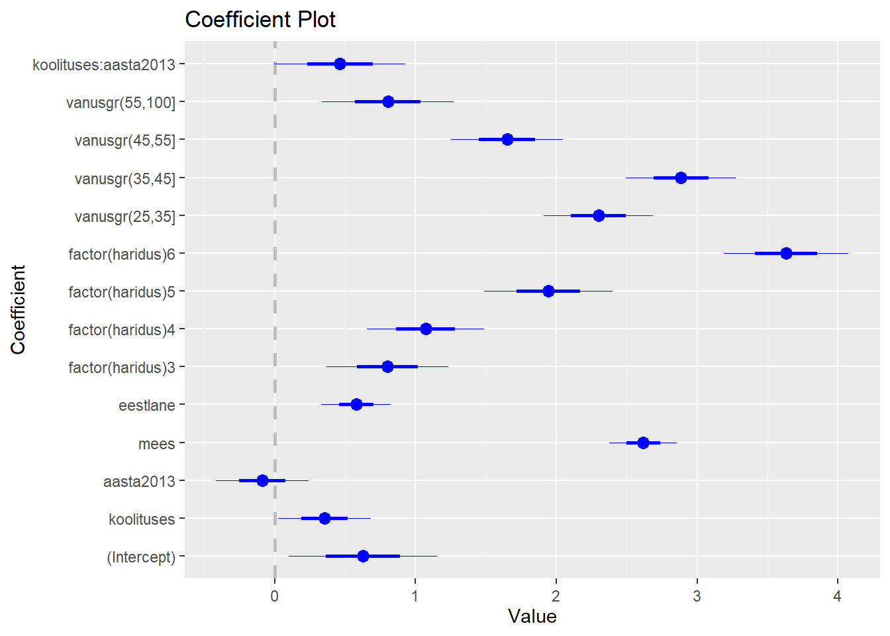
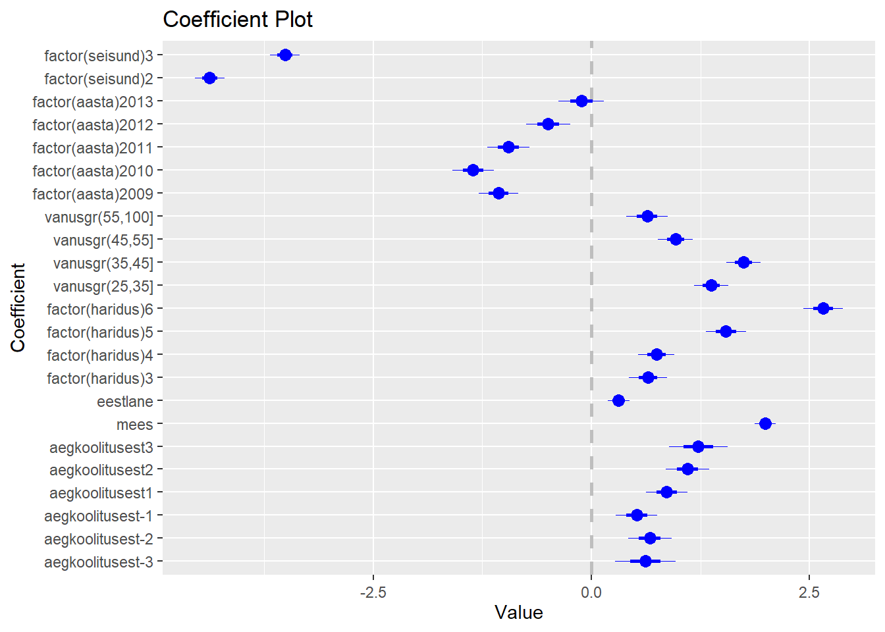
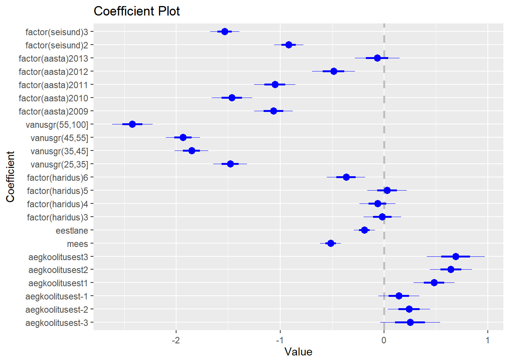
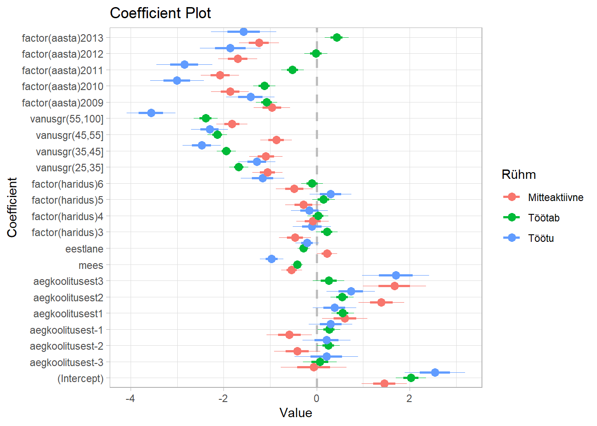
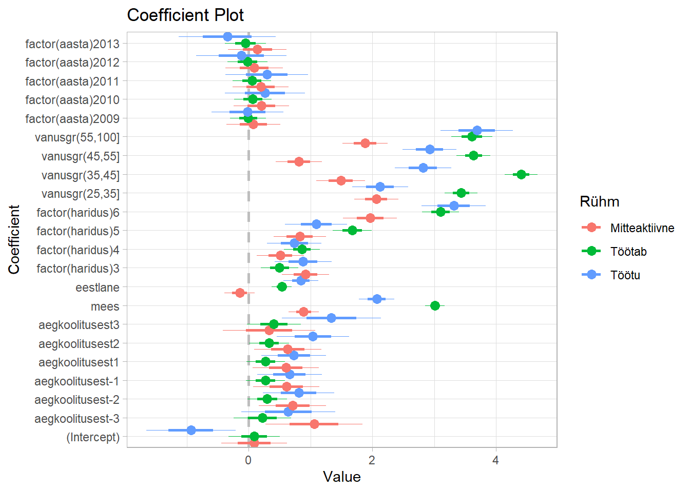

library(dplyr)
library(coefplot)
library(stargazer)5 Juurdekasvude erinevus (Dif-Dif)
Poolik - arenev
5.1 Mudeli seade
Juurdekasvude erinevuse (DiD) meetod on üks populaarsemaid kvaasi-eksperimentaalseid meetodeid põhjusliku mõju hindamiseks. See eemaldab ajas muutumatud erinevused gruppide vahel ja ajas muutuvad tegurid, mis mõjutavad mõlemaid gruppe ühtemoodi.
Klassikaline 2x2 DiD disain
Kõige lihtsamal kujul on meil kaks rühma ja kaks ajahetke:
- Grupid (\(D\)):
- \(D=1\): Osalusrühm (Treatment), kes saab mingil hetkel sekkumise.
- \(D=0\): Võrdlusrühm (Control), kes sekkumist ei saa.
- Aeg (\(T\)):
- \(T=1\): Pärast sekkumist (Post).
- \(T=0\): Enne sekkumist (Pre).
DiD hinnang Valemina
DiD hinnang (\(\hat{\delta}_{DiD}\)) leitakse kui erinevus osalejate ajas toimunud muutuse ja võrdlusrühma ajas toimunud muutuse vahel:
\[ \hat{\delta}_{DiD} = \underbrace{(\bar{Y}_{T=1}^{D=1} - \bar{Y}_{T=0}^{D=1})}_{\text{Muutus osalejatel}} - \underbrace{(\bar{Y}_{T=1}^{D=0} - \bar{Y}_{T=0}^{D=0})}_{\text{Muutus võrdlusrühmal}} \] Kus \(\bar{Y}_{T}^{D}\) on tulemuse keskmine vastavas grupis ja ajahetkel.
DiD Regressioonimudelina
Seda sama hinnangut saab leida lineaarse regressioonimudeli abil, kasutades interaktsiooniliiget:
\[Y_{it} = \alpha + \beta_1 \text{D}_i + \beta_2 \text{Post}_t + \delta*(\text{D}_i \times \text{Post}_t) + \epsilon_{it} \]
Kus:
- \(\alpha\): Kontrollgrupi keskmine enne sekkumist (Constant).
- \(\beta_1\): Gruppidevaheline püsiv erinevus (Treatment Group Effect).
- \(\beta_2\): Ajaline trend, mis on ühine mõlemale grupile (Time Trend).
- ** \(\delta_{DiD}\) **: Põhjuslik mõju ehk huvipakkuv parameeter (ATT). See näitab lisandumist tulemuses, mis tekib ainult osalejatel pärast sekkumist.
Paralleelse trendi eeldus ja ATT
DiD meetodi kehtivus sõltub paralleelse trendi eeldusest (Parallel trends assumption).
Eeldus väidab, et sekkumise puudumisel oleks osalusrühma keskmine tulemus muutunud ajas samamoodi nagu võrdlusrühmal.
Matemaatiliselt (kasutades potentsiaalseid tulemusi \(Y^0\)):
\[ E[Y^0_{t=1} - Y^0_{t=0} | D=1] = E[Y^0_{t=1} - Y^0_{t=0} | D=0] \]
Kuidas see annab ATT?
Meie eesmärk on leida keskmine mõju osalejatele (ATT - Average Treatment Effect on the Treated):
\[ATT = E[Y^1_{t=1} - Y^0_{t=1} | D=1] \] Kuna \(Y^0_{t=1}\) (osalejate tulemus ilma sekkumiseta) ei ole vaadeldav, kasutame paralleelse trendi eeldust selle asendamiseks:
- Tegelik muutus osalejatel: \(E[Y^1_{t=1} | D=1] - E[Y^0_{t=0} | D=1]\)
- Muutus kui sekkumist poleks: Eelduse kohaselt võrdne kontrollgrupi muutusega \(E[Y^0_{t=1} | D=0] - E[Y^0_{t=0} | D=0]\).
Seega:
\[ ATT = (\text{Osalusrühma muutus}) - (\text{Võrdlusrühma muutus}) \]
Kahesuunaline fikseeritud effektide mudel (TWFE)
Two-way Fixed Effects model
Kui andmed on paneelkujul (sama objekti jälgitakse mitmel ajahetkel) või meil on palju objekte ja ajahetki, kasutatakse TWFE mudelit. See on 2x2 disaini üldistus.
\[ Y_{it} = \alpha_i + \gamma_t + \delta D_{it} + \mathbf{X}_{it}\beta + \epsilon_{it} \]
Kus:
- \(\alpha_i\) (Unit Fixed Effects): Ühiku-spetsiifiline fikseeritud efekt. See kontrollib kõiki tegureid, mis on ühikule \(i\) omased ja ajas ei muutu (nt asukoht, kultuur, geneetika). Asendab \(\text{Treat}_i\) muutujat.
- \(\gamma_t\) (Time Fixed Effects): Aja-spetsiifiline fikseeritud efekt. See kontrollib šokke, mis mõjutavad kõiki ühikuid antud aastal \(t\) ühtemoodi (nt majanduskriis, seadusemuudatused). Asendab \(\text{Post}_t\) muutujat.
- \(D_{it}\) (Treatment Indicator): Binaarne muutuja, mis on 1, kui ühik \(i\) on ajal \(t\) sekkumise all.
- \(\delta\): Hinnanguline ATT (eeldusel, et mõju on homogeenne).
Sündmuste uuring (Event study)
Sündmuste uuring (Event Study) on dünaamiline regressioonimudel, mis võimaldab hinnata meetme mõju muutumist ajas ning testida visuaalselt ja statistiliselt paralleelse trendi eeldust.
Regressioonivalem
Üldkuju Kahesuunalise Fikseeritud Efektide (TWFE) mudelina:
\[ Y_{it} = \alpha_i + \gamma_t + \sum_{k=-K, k \neq 0}^{L} \beta_k \cdot D_{it}^k + \epsilon_{it} \]
Muutujate selgitus
- \(Y_{it}\): Tulemusmuutuja ühikule \(i\) ajahetkel \(t\).
- \(\alpha_i\): Ühiku fikseeritud efekt (Unit Fixed Effects). Kontrollib ajas muutumatuid eripärasid (nt asukoht, kultuur).
- \(\gamma_t\): Aja fikseeritud efekt (Time Fixed Effects). Kontrollib šokke, mis mõjutavad kõiki ühikuid samal ajal (nt majanduskriis, inflatsioon).
- \(k\): Suhteline aeg sündmuseni (\(t - E_i\), kus \(E_i\) on sündmuse toimumise aeg).
- \(k < 0\): Perioodid enne meedet (Leads).
- \(k \ge 0\): Perioodid pärast meedet (Lags).
- \(D_{it}^k\): Sündmuse indikaatorid (Event Time Dummies).
- Muutuja on 1, kui ühik \(i\) on ajahetkel \(t\) täpselt \(k\) perioodi kaugusel sündmusest.
- Muutuja on 0 muudel juhtudel.
- \(\beta_k\): Huvipakkuvad koefitsiendid:
- Kui \(k < 0\) (Eel-periood): \(\beta_k\) näitab erinevust töötlus- ja kontrollgrupi vahel enne meedet. See testib paralleelseid trende. Kui eeldus kehtib, peaksid need \(\beta\)-d olema statistiliselt nullist eristamatud (nulljoone lähedal).
- Kui \(k \ge 0\) (Järel-periood): \(\beta_k\) näitab meetme dünaamilist mõju \(k\) perioodi pärast sündmust.
- \(k \neq 0\): Väljajäetud kategooria.
- Tavaliselt jäetakse mudelist välja periood vahetult enne sündmust (\(k = 0\)), et vältida multikollineaarsust. Kõiki teisi koefitsiente (\(\beta_k\)) tõlgendatakse selle baasperioodi suhtes. Eeldame, et perioodil 1 tekib esimest korda avatus meetmele.
5.2 Näide tööpoliitikast
#Muutke ära andmete kataloog
datapath = "http://kodu.ut.ee/~avork/files/oppetoo/pohjustagajarg/"
#Lugege sisse andmefail
df <- read.csv(file = paste0(datapath, "adulttraining.csv"))
dfl <- read.csv(file = paste0(datapath, "adulttraininglong.csv"))5.3 Kirjeldav statistiline analüüs
stargazer(df, type = "text")
=========================================================
Statistic N Mean St. Dev. Min Max
---------------------------------------------------------
id 4,586 2,293.500 1,324.008 1 4,586
koolituses 4,586 0.500 0.500 0 1
palk2008 4,586 6.063 5.537 0.000 24.959
palk2009 4,586 4.971 5.003 0.000 22.860
palk2010 4,586 4.509 4.872 0.000 21.768
palk2011 4,586 5.014 5.181 0.000 22.508
palk2012 4,586 5.737 5.764 0.000 25.584
palk2013 4,586 6.208 6.217 0.000 27.530
haridus 4,586 4.154 1.287 2 6
mees 4,586 0.573 0.495 0 1
eestlane 4,586 0.657 0.475 0 1
vanus 4,586 39.831 11.892 16 73
kulu 2,293 3,334.167 1,461.837 331.320 6,624.000
koolitusaasta 4,586 1,005.240 1,005.350 0 2,011
seisund 4,586 1.463 0.749 1 3
---------------------------------------------------------stargazer(df %>% filter(koolituses ==1), type = "text")
=========================================================
Statistic N Mean St. Dev. Min Max
---------------------------------------------------------
id 2,293 1,147.000 662.076 1 2,293
koolituses 2,293 1.000 0.000 1 1
palk2008 2,293 6.399 5.412 0.000 24.959
palk2009 2,293 5.298 4.971 0.000 22.860
palk2010 2,293 4.736 4.817 0.000 21.768
palk2011 2,293 5.492 5.174 0.000 22.508
palk2012 2,293 6.339 5.758 0.000 25.584
palk2013 2,293 6.776 6.293 0.000 27.530
haridus 2,293 4.215 1.288 2 6
mees 2,293 0.604 0.489 0 1
eestlane 2,293 0.652 0.476 0 1
vanus 2,293 39.310 11.719 17 73
kulu 2,293 3,334.167 1,461.837 331.320 6,624.000
koolitusaasta 2,293 2,010.481 0.500 2,010 2,011
seisund 2,293 1.578 0.846 1 3
---------------------------------------------------------stargazer(df %>% filter(koolituses ==0), type = "text")
===================================================
Statistic N Mean St. Dev. Min Max
---------------------------------------------------
id 2,293 3,440.000 662.076 2,294 4,586
koolituses 2,293 0.000 0.000 0 0
palk2008 2,293 5.726 5.640 0.000 24.959
palk2009 2,293 4.644 5.014 0.000 22.860
palk2010 2,293 4.282 4.918 0.000 21.768
palk2011 2,293 4.536 5.146 0.000 22.508
palk2012 2,293 5.135 5.708 0.000 25.584
palk2013 2,293 5.640 6.088 0.000 27.530
haridus 2,293 4.092 1.283 2 6
mees 2,293 0.543 0.498 0 1
eestlane 2,293 0.662 0.473 0 1
vanus 2,293 40.353 12.042 16 64
koolitusaasta 2,293 0.000 0.000 0 0
seisund 2,293 1.348 0.616 1 3
---------------------------------------------------#Gruppide võrdlus
prop.table(table("Koolituses" = df$koolituses, "Mees" = df$mees),1) Mees
Koolituses 0 1
0 0.4570432 0.5429568
1 0.3964239 0.6035761Keskmine vanus
df %>% group_by(koolituses) %>%
summarise(keskminevanus = mean(vanus))# A tibble: 2 × 2
koolituses keskminevanus
<int> <dbl>
1 0 40.4
2 1 39.3Palk on tuhandetes eurodes
Mis on palga muutus osalusgrupis ja võrdlusgrupis? (Enne-pärast hinnang)
Vaatame 2008 vs 2013. Arvutame erinevuse.
df %>%
group_by(koolituses) %>%
summarise(palk2008 = mean(palk2008),
palk2013 = mean(palk2013))# A tibble: 2 × 3
koolituses palk2008 palk2013
<int> <dbl> <dbl>
1 0 5.73 5.64
2 1 6.40 6.78Palga muutus osalusgrupis
temp <- df %>%
group_by(koolituses) %>%
summarise(palk2008 = mean(palk2008),
palk2013 = mean(palk2013)) %>%
mutate(palgamuut = palk2013-palk2008)
#Enne-pärast hinnang
temp# A tibble: 2 × 4
koolituses palk2008 palk2013 palgamuut
<int> <dbl> <dbl> <dbl>
1 0 5.73 5.64 -0.0865
2 1 6.40 6.78 0.377 #Osalusgrupis
temp$palgamuut[2][1] 0.3773767difdif = temp$palgamuut[2] - temp$palgamuut[1]
difdif[1] 0.4638455.4 Joonis
#Keskmised palgad osalus ja võrdlusrühmas
temp <- dfl %>% group_by(koolituses, aasta) %>%
summarise(palk = mean(palk))`summarise()` has grouped output by 'koolituses'. You can override using the
`.groups` argument.temp# A tibble: 12 × 3
# Groups: koolituses [2]
koolituses aasta palk
<int> <int> <dbl>
1 0 2008 5.73
2 0 2009 4.64
3 0 2010 4.28
4 0 2011 4.54
5 0 2012 5.14
6 0 2013 5.64
7 1 2008 6.40
8 1 2009 5.30
9 1 2010 4.74
10 1 2011 5.49
11 1 2012 6.34
12 1 2013 6.78#Praksis tee rida haaval
ggplot(temp, aes(x = aasta, y = palk, color = factor(koolituses))) +
geom_rect(xmin = 2009.5, xmax = 2011.5, ymin = min(temp$palk)-0.5, ymax = max(temp$palk), fill = "grey100",
alpha = 0.1, color = "steelblue") +
geom_point() +
geom_line() +
geom_text(aes(label = round(palk,1)), vjust = -2, show.legend = FALSE) +
labs(color = "", x = "", y = "tuh.eur") +
theme_light()
5.5 Regressioonanalüüs
2x2 disain
#Jätame alles aastad
dfls <- dfl %>%
filter(aasta == 2008 | aasta ==2013) %>%
mutate(aasta = as.factor(aasta))
mudel <- lm(data = dfls, formula = palk ~ koolituses + aasta + koolituses*aasta)
summary(mudel)
Call:
lm(formula = palk ~ koolituses + aasta + koolituses * aasta,
data = dfls)
Residuals:
Min 1Q Median 3Q Max
-6.776 -5.279 -1.159 3.224 21.890
Coefficients:
Estimate Std. Error t value Pr(>|t|)
(Intercept) 5.72637 0.12256 46.724 < 2e-16 ***
koolituses 0.67266 0.17332 3.881 0.000105 ***
aasta2013 -0.08647 0.17332 -0.499 0.617872
koolituses:aasta2013 0.46385 0.24512 1.892 0.058476 .
---
Signif. codes: 0 '***' 0.001 '**' 0.01 '*' 0.05 '.' 0.1 ' ' 1
Residual standard error: 5.869 on 9168 degrees of freedom
Multiple R-squared: 0.006445, Adjusted R-squared: 0.006119
F-statistic: 19.82 on 3 and 9168 DF, p-value: 8.386e-13#Võrrelge nüüd 2009 ja 2012 andmetega
dfls <- dfl %>%
filter(aasta ==2009 | aasta ==2012) %>%
mutate(aasta = as.factor(aasta))
mudel <- lm(data = dfls, formula = palk ~ koolituses + aasta + koolituses*aasta)
summary(mudel)
Call:
lm(formula = palk ~ koolituses + aasta + koolituses * aasta,
data = dfls)
Residuals:
Min 1Q Median 3Q Max
-6.339 -4.644 -1.134 2.971 20.449
Coefficients:
Estimate Std. Error t value Pr(>|t|)
(Intercept) 4.6441 0.1123 41.369 < 2e-16 ***
koolituses 0.6534 0.1588 4.116 3.89e-05 ***
aasta2012 0.4910 0.1588 3.092 0.00199 **
koolituses:aasta2012 0.5504 0.2245 2.451 0.01425 *
---
Signif. codes: 0 '***' 0.001 '**' 0.01 '*' 0.05 '.' 0.1 ' ' 1
Residual standard error: 5.376 on 9168 degrees of freedom
Multiple R-squared: 0.01303, Adjusted R-squared: 0.01271
F-statistic: 40.34 on 3 and 9168 DF, p-value: < 2.2e-16#Lisame mudelisse muud tegurid
#Andmestik uuesti
difdif1 <- dfl %>%
filter(aasta == 2008 | aasta ==2013) %>%
mutate(aasta = as.factor(aasta)
)
#Ja mudel
mudel <- lm(data = difdif1, formula = palk ~ koolituses + aasta +
koolituses*aasta + mees + eestlane + factor(haridus) + vanusgr + factor(seisund))
summary(mudel)
Call:
lm(formula = palk ~ koolituses + aasta + koolituses * aasta +
mees + eestlane + factor(haridus) + vanusgr + factor(seisund),
data = difdif1)
Residuals:
Min 1Q Median 3Q Max
-11.4026 -3.6984 -0.5935 2.8292 20.9597
Coefficients:
Estimate Std. Error t value Pr(>|t|)
(Intercept) 2.63883 0.26268 10.046 < 2e-16 ***
koolituses 0.49975 0.16041 3.115 0.001842 **
aasta2013 -0.08647 0.15749 -0.549 0.582981
mees 2.39451 0.11512 20.799 < 2e-16 ***
eestlane 0.30816 0.11864 2.597 0.009408 **
factor(haridus)3 0.58185 0.20738 2.806 0.005032 **
factor(haridus)4 0.68067 0.19926 3.416 0.000638 ***
factor(haridus)5 1.52820 0.21882 6.984 3.07e-12 ***
factor(haridus)6 2.92520 0.21333 13.712 < 2e-16 ***
vanusgr(25,35] 1.84815 0.18750 9.857 < 2e-16 ***
vanusgr(35,45] 2.25874 0.18872 11.969 < 2e-16 ***
vanusgr(45,55] 1.32949 0.19052 6.978 3.20e-12 ***
vanusgr(55,100] 0.88350 0.22516 3.924 8.78e-05 ***
factor(seisund)2 -4.03936 0.16201 -24.933 < 2e-16 ***
factor(seisund)3 -2.85658 0.16182 -17.652 < 2e-16 ***
koolituses:aasta2013 0.46385 0.22272 2.083 0.037310 *
---
Signif. codes: 0 '***' 0.001 '**' 0.01 '*' 0.05 '.' 0.1 ' ' 1
Residual standard error: 5.332 on 9156 degrees of freedom
Multiple R-squared: 0.1808, Adjusted R-squared: 0.1795
F-statistic: 134.7 on 15 and 9156 DF, p-value: < 2.2e-16mudel <- lm(data = difdif1, formula = palk ~ koolituses + aasta +
koolituses*aasta + mees + eestlane + factor(haridus) + vanusgr)
summary(mudel)
Call:
lm(formula = palk ~ koolituses + aasta + koolituses * aasta +
mees + eestlane + factor(haridus) + vanusgr, data = difdif1)
Residuals:
Min 1Q Median 3Q Max
-11.0784 -4.2239 -0.5918 3.1125 22.1705
Coefficients:
Estimate Std. Error t value Pr(>|t|)
(Intercept) 0.62852 0.26374 2.383 0.017185 *
koolituses 0.35621 0.16480 2.162 0.030678 *
aasta2013 -0.08647 0.16424 -0.526 0.598564
mees 2.61807 0.11978 21.858 < 2e-16 ***
eestlane 0.57926 0.12310 4.705 2.57e-06 ***
factor(haridus)3 0.80047 0.21600 3.706 0.000212 ***
factor(haridus)4 1.07191 0.20718 5.174 2.34e-07 ***
factor(haridus)5 1.94470 0.22746 8.550 < 2e-16 ***
factor(haridus)6 3.63372 0.22061 16.471 < 2e-16 ***
vanusgr(25,35] 2.29960 0.19483 11.803 < 2e-16 ***
vanusgr(35,45] 2.88528 0.19538 14.768 < 2e-16 ***
vanusgr(45,55] 1.65069 0.19804 8.335 < 2e-16 ***
vanusgr(55,100] 0.80390 0.23462 3.426 0.000614 ***
koolituses:aasta2013 0.46385 0.23227 1.997 0.045850 *
---
Signif. codes: 0 '***' 0.001 '**' 0.01 '*' 0.05 '.' 0.1 ' ' 1
Residual standard error: 5.561 on 9158 degrees of freedom
Multiple R-squared: 0.1089, Adjusted R-squared: 0.1076
F-statistic: 86.05 on 13 and 9158 DF, p-value: < 2.2e-16coefplot(mudel)`height` was translated to `width`.
`height` was translated to `width`.
#Leiame erinevuse koolituse aastast.
# Kõigile koolituses mitteosalejatele paneme selle nulliks
dfl <- dfl %>%
mutate(aegkoolitusest = ifelse(koolituses ==1,
aasta - koolitusaasta,
0))
#Joonise jaoks teeme selle faktoriks, et võrdlusrühm oleks null
dfl <- dfl %>%
mutate(aegkoolitusest = factor(aegkoolitusest, levels = c(0, -3:-1, 1:3)))
table(dfl$aegkoolitusest)
0 -3 -2 -1 1 2 3
16051 1102 2293 2293 2293 2293 1191 #Time event model
mudel <- lm(data = dfl, formula = palk ~ aegkoolitusest + mees +
eestlane + factor(haridus) + vanusgr + factor(aasta) + factor(seisund))
summary(mudel)
Call:
lm(formula = palk ~ aegkoolitusest + mees + eestlane + factor(haridus) +
vanusgr + factor(aasta) + factor(seisund), data = dfl)
Residuals:
Min 1Q Median 3Q Max
-11.1467 -3.1984 -0.5901 2.4896 21.2495
Coefficients:
Estimate Std. Error t value Pr(>|t|)
(Intercept) 3.33072 0.15536 21.439 < 2e-16 ***
aegkoolitusest-3 0.61845 0.17385 3.557 0.000375 ***
aegkoolitusest-2 0.67030 0.12333 5.435 5.53e-08 ***
aegkoolitusest-1 0.51922 0.11952 4.344 1.40e-05 ***
aegkoolitusest1 0.86321 0.11950 7.224 5.19e-13 ***
aegkoolitusest2 1.10103 0.12305 8.948 < 2e-16 ***
aegkoolitusest3 1.22460 0.16875 7.257 4.07e-13 ***
mees 1.99551 0.06044 33.015 < 2e-16 ***
eestlane 0.31287 0.06232 5.020 5.20e-07 ***
factor(haridus)3 0.64890 0.10894 5.957 2.61e-09 ***
factor(haridus)4 0.74425 0.10466 7.111 1.18e-12 ***
factor(haridus)5 1.54188 0.11492 13.417 < 2e-16 ***
factor(haridus)6 2.65592 0.11204 23.704 < 2e-16 ***
vanusgr(25,35] 1.37220 0.09848 13.933 < 2e-16 ***
vanusgr(35,45] 1.74154 0.09913 17.567 < 2e-16 ***
vanusgr(45,55] 0.96528 0.10008 9.645 < 2e-16 ***
vanusgr(55,100] 0.63932 0.11826 5.406 6.50e-08 ***
factor(aasta)2009 -1.06512 0.11343 -9.390 < 2e-16 ***
factor(aasta)2010 -1.35564 0.11863 -11.427 < 2e-16 ***
factor(aasta)2011 -0.95030 0.12090 -7.860 3.98e-15 ***
factor(aasta)2012 -0.49641 0.12559 -3.953 7.75e-05 ***
factor(aasta)2013 -0.11446 0.13047 -0.877 0.380319
factor(seisund)2 -4.37419 0.08505 -51.433 < 2e-16 ***
factor(seisund)3 -3.51146 0.08458 -41.518 < 2e-16 ***
---
Signif. codes: 0 '***' 0.001 '**' 0.01 '*' 0.05 '.' 0.1 ' ' 1
Residual standard error: 4.852 on 27492 degrees of freedom
Multiple R-squared: 0.2179, Adjusted R-squared: 0.2173
F-statistic: 333.1 on 23 and 27492 DF, p-value: < 2.2e-16coefplot(mudel, intercept = FALSE)`height` was translated to `width`.
`height` was translated to `width`.
Lisame mineviku palga enne koolitust sisse ja vaatame muutust võrreldes 2008 aasta palgaga
dfl <- dfl %>%
group_by(id) %>%
mutate(palk2008 = palk[aasta==2008]) %>%
mutate(dpalk2008 = palk - palk2008) %>%
ungroup()
mudel2 <- lm(data = dfl, formula = dpalk2008 ~ aegkoolitusest + mees +
eestlane + factor(haridus) + vanusgr + factor(aasta) + factor(seisund))
summary(mudel2)
Call:
lm(formula = dpalk2008 ~ aegkoolitusest + mees + eestlane + factor(haridus) +
vanusgr + factor(aasta) + factor(seisund), data = dfl)
Residuals:
Min 1Q Median 3Q Max
-24.5388 -1.2891 0.2704 1.6983 25.3013
Coefficients:
Estimate Std. Error t value Pr(>|t|)
(Intercept) 2.34683 0.12829 18.293 < 2e-16 ***
aegkoolitusest-3 0.25237 0.14356 1.758 0.078759 .
aegkoolitusest-2 0.24246 0.10184 2.381 0.017289 *
aegkoolitusest-1 0.14363 0.09869 1.455 0.145587
aegkoolitusest1 0.48287 0.09867 4.894 9.96e-07 ***
aegkoolitusest2 0.64464 0.10161 6.345 2.27e-10 ***
aegkoolitusest3 0.69184 0.13935 4.965 6.92e-07 ***
mees -0.51370 0.04991 -10.292 < 2e-16 ***
eestlane -0.18885 0.05146 -3.669 0.000244 ***
factor(haridus)3 -0.01539 0.08996 -0.171 0.864121
factor(haridus)4 -0.06219 0.08642 -0.720 0.471801
factor(haridus)5 0.03194 0.09490 0.337 0.736445
factor(haridus)6 -0.36442 0.09252 -3.939 8.21e-05 ***
vanusgr(25,35] -1.48122 0.08132 -18.214 < 2e-16 ***
vanusgr(35,45] -1.85345 0.08186 -22.641 < 2e-16 ***
vanusgr(45,55] -1.93637 0.08264 -23.430 < 2e-16 ***
vanusgr(55,100] -2.42367 0.09765 -24.819 < 2e-16 ***
factor(aasta)2009 -1.06384 0.09367 -11.358 < 2e-16 ***
factor(aasta)2010 -1.46447 0.09796 -14.950 < 2e-16 ***
factor(aasta)2011 -1.05061 0.09984 -10.523 < 2e-16 ***
factor(aasta)2012 -0.48558 0.10371 -4.682 2.85e-06 ***
factor(aasta)2013 -0.06551 0.10773 -0.608 0.543116
factor(seisund)2 -0.91739 0.07023 -13.063 < 2e-16 ***
factor(seisund)3 -1.53353 0.06984 -21.958 < 2e-16 ***
---
Signif. codes: 0 '***' 0.001 '**' 0.01 '*' 0.05 '.' 0.1 ' ' 1
Residual standard error: 4.006 on 27492 degrees of freedom
Multiple R-squared: 0.07153, Adjusted R-squared: 0.07075
F-statistic: 92.08 on 23 and 27492 DF, p-value: < 2.2e-16coefplot(mudel2, intercept = FALSE)`height` was translated to `width`.
`height` was translated to `width`.
Teeme mudeli eraldi töötavate, töötute ja mitteaktiivsete jaoks.
library(broom)
results <- dfl %>%
group_by(seisund) %>%
group_modify(~ broom::tidy(
lm(dpalk2008 ~ aegkoolitusest + mees + eestlane +
factor(haridus) + vanusgr + factor(aasta),
data = .x)
))
results# A tibble: 66 × 6
# Groups: seisund [3]
seisund term estimate std.error statistic p.value
<int> <chr> <dbl> <dbl> <dbl> <dbl>
1 1 (Intercept) 2.03 0.162 12.6 5.05e-36
2 1 aegkoolitusest-3 0.0686 0.181 0.379 7.04e- 1
3 1 aegkoolitusest-2 0.251 0.125 2.00 4.54e- 2
4 1 aegkoolitusest-1 0.267 0.122 2.19 2.88e- 2
5 1 aegkoolitusest1 0.558 0.122 4.56 5.05e- 6
6 1 aegkoolitusest2 0.544 0.125 4.35 1.35e- 5
7 1 aegkoolitusest3 0.258 0.170 1.52 1.28e- 1
8 1 mees -0.418 0.0615 -6.80 1.05e-11
9 1 eestlane -0.281 0.0640 -4.40 1.10e- 5
10 1 factor(haridus)3 0.220 0.118 1.86 6.26e- 2
# ℹ 56 more rowsVõi
dfl <- dfl %>%
mutate(seisundtext = case_when(
seisund == 1 ~ "Töötab",
seisund == 2 ~ "Mitteaktiivne",
seisund == 3 ~ "Töötu"))
table(dfl$seisund, dfl$seisundtext)
Mitteaktiivne Töötab Töötu
1 0 19068 0
2 4152 0 0
3 0 0 4296models <- lapply(split(dfl, dfl$seisundtext), function(df) {
lm(dpalk2008 ~ aegkoolitusest + mees + eestlane +
factor(haridus) + vanusgr + factor(aasta),
data = df)
})
summary(models[[1]]) # results for seisund = 1
Call:
lm(formula = dpalk2008 ~ aegkoolitusest + mees + eestlane + factor(haridus) +
vanusgr + factor(aasta), data = df)
Residuals:
Min 1Q Median 3Q Max
-22.8540 -0.9882 0.4606 1.6002 21.8434
Coefficients:
Estimate Std. Error t value Pr(>|t|)
(Intercept) 1.45382 0.24216 6.004 2.10e-09 ***
aegkoolitusest-3 -0.06414 0.35509 -0.181 0.85667
aegkoolitusest-2 -0.41936 0.24689 -1.699 0.08948 .
aegkoolitusest-1 -0.58676 0.24370 -2.408 0.01610 *
aegkoolitusest1 0.60835 0.24370 2.496 0.01259 *
aegkoolitusest2 1.39161 0.24663 5.643 1.79e-08 ***
aegkoolitusest3 1.67315 0.33804 4.949 7.74e-07 ***
mees -0.53755 0.11044 -4.867 1.17e-06 ***
eestlane 0.22079 0.11093 1.990 0.04661 *
factor(haridus)3 -0.46576 0.17386 -2.679 0.00741 **
factor(haridus)4 -0.08594 0.17345 -0.495 0.62028
factor(haridus)5 -0.28684 0.19251 -1.490 0.13630
factor(haridus)6 -0.48029 0.19660 -2.443 0.01461 *
vanusgr(25,35] -1.06025 0.16224 -6.535 7.14e-11 ***
vanusgr(35,45] -1.09392 0.17827 -6.136 9.23e-10 ***
vanusgr(45,55] -0.87006 0.16862 -5.160 2.59e-07 ***
vanusgr(55,100] -1.82290 0.16634 -10.959 < 2e-16 ***
factor(aasta)2009 -0.96318 0.19760 -4.874 1.13e-06 ***
factor(aasta)2010 -1.86286 0.20271 -9.190 < 2e-16 ***
factor(aasta)2011 -2.07730 0.20495 -10.136 < 2e-16 ***
factor(aasta)2012 -1.69572 0.20979 -8.083 8.24e-16 ***
factor(aasta)2013 -1.24303 0.21512 -5.778 8.10e-09 ***
---
Signif. codes: 0 '***' 0.001 '**' 0.01 '*' 0.05 '.' 0.1 ' ' 1
Residual standard error: 3.41 on 4130 degrees of freedom
Multiple R-squared: 0.08617, Adjusted R-squared: 0.08152
F-statistic: 18.55 on 21 and 4130 DF, p-value: < 2.2e-16summary(models[[2]]) # results for seisund = 2
Call:
lm(formula = dpalk2008 ~ aegkoolitusest + mees + eestlane + factor(haridus) +
vanusgr + factor(aasta), data = df)
Residuals:
Min 1Q Median 3Q Max
-24.6139 -1.3406 0.2502 1.5351 25.2833
Coefficients:
Estimate Std. Error t value Pr(>|t|)
(Intercept) 2.03160 0.16179 12.557 < 2e-16 ***
aegkoolitusest-3 0.06861 0.18086 0.379 0.704415
aegkoolitusest-2 0.25106 0.12547 2.001 0.045407 *
aegkoolitusest-1 0.26715 0.12220 2.186 0.028815 *
aegkoolitusest1 0.55766 0.12219 4.564 5.05e-06 ***
aegkoolitusest2 0.54447 0.12510 4.352 1.35e-05 ***
aegkoolitusest3 0.25842 0.16963 1.523 0.127666
mees -0.41810 0.06146 -6.803 1.05e-11 ***
eestlane -0.28148 0.06399 -4.399 1.10e-05 ***
factor(haridus)3 0.21979 0.11802 1.862 0.062574 .
factor(haridus)4 0.03033 0.11240 0.270 0.787312
factor(haridus)5 0.14695 0.12205 1.204 0.228631
factor(haridus)6 -0.10041 0.11735 -0.856 0.392179
vanusgr(25,35] -1.67483 0.10387 -16.124 < 2e-16 ***
vanusgr(35,45] -1.94220 0.10325 -18.810 < 2e-16 ***
vanusgr(45,55] -2.13732 0.10668 -20.034 < 2e-16 ***
vanusgr(55,100] -2.39087 0.12881 -18.561 < 2e-16 ***
factor(aasta)2009 -1.07584 0.11400 -9.437 < 2e-16 ***
factor(aasta)2010 -1.12759 0.11833 -9.529 < 2e-16 ***
factor(aasta)2011 -0.52076 0.12103 -4.303 1.70e-05 ***
factor(aasta)2012 -0.01717 0.12514 -0.137 0.890873
factor(aasta)2013 0.43029 0.12966 3.319 0.000906 ***
---
Signif. codes: 0 '***' 0.001 '**' 0.01 '*' 0.05 '.' 0.1 ' ' 1
Residual standard error: 4.083 on 19046 degrees of freedom
Multiple R-squared: 0.05172, Adjusted R-squared: 0.05067
F-statistic: 49.47 on 21 and 19046 DF, p-value: < 2.2e-16summary(models[[3]])
Call:
lm(formula = dpalk2008 ~ aegkoolitusest + mees + eestlane + factor(haridus) +
vanusgr + factor(aasta), data = df)
Residuals:
Min 1Q Median 3Q Max
-23.3129 -1.6260 0.3084 2.1003 23.6084
Coefficients:
Estimate Std. Error t value Pr(>|t|)
(Intercept) 2.5419 0.3245 7.833 5.99e-15 ***
aegkoolitusest-3 0.2090 0.3399 0.615 0.53859
aegkoolitusest-2 0.2158 0.2577 0.837 0.40240
aegkoolitusest-1 0.3005 0.2340 1.284 0.19913
aegkoolitusest1 0.3839 0.2344 1.638 0.10157
aegkoolitusest2 0.7346 0.2610 2.815 0.00491 **
aegkoolitusest3 1.7024 0.3605 4.722 2.40e-06 ***
mees -0.9696 0.1268 -7.645 2.56e-14 ***
eestlane -0.2064 0.1268 -1.627 0.10374
factor(haridus)3 -0.1022 0.2069 -0.494 0.62130
factor(haridus)4 -0.1554 0.1970 -0.789 0.43029
factor(haridus)5 0.2983 0.2251 1.325 0.18516
factor(haridus)6 -1.1627 0.2323 -5.006 5.78e-07 ***
vanusgr(25,35] -1.2890 0.2022 -6.373 2.04e-10 ***
vanusgr(35,45] -2.4755 0.2046 -12.099 < 2e-16 ***
vanusgr(45,55] -2.3052 0.1961 -11.756 < 2e-16 ***
vanusgr(55,100] -3.5651 0.2628 -13.565 < 2e-16 ***
factor(aasta)2009 -1.4256 0.2598 -5.487 4.33e-08 ***
factor(aasta)2010 -3.0061 0.2897 -10.375 < 2e-16 ***
factor(aasta)2011 -2.8486 0.3003 -9.485 < 2e-16 ***
factor(aasta)2012 -1.8581 0.3274 -5.676 1.47e-08 ***
factor(aasta)2013 -1.5700 0.3506 -4.478 7.71e-06 ***
---
Signif. codes: 0 '***' 0.001 '**' 0.01 '*' 0.05 '.' 0.1 ' ' 1
Residual standard error: 4.029 on 4274 degrees of freedom
Multiple R-squared: 0.1415, Adjusted R-squared: 0.1373
F-statistic: 33.55 on 21 and 4274 DF, p-value: < 2.2e-16multiplot(models) + theme_light() + labs(color = "Rühm")`height` was translated to `width`.
`height` was translated to `width`.
models <- lapply(split(dfl, dfl$seisundtext), function(df) {
lm(palk2008 ~ aegkoolitusest + mees + eestlane +
factor(haridus) + vanusgr + factor(aasta),
data = df)
})
summary(models[[1]]) # results for seisund = 1
Call:
lm(formula = palk2008 ~ aegkoolitusest + mees + eestlane + factor(haridus) +
vanusgr + factor(aasta), data = df)
Residuals:
Min 1Q Median 3Q Max
-5.622 -2.564 -1.081 1.558 20.586
Coefficients:
Estimate Std. Error t value Pr(>|t|)
(Intercept) 0.08828 0.26678 0.331 0.74073
aegkoolitusest-3 1.05772 0.39120 2.704 0.00688 **
aegkoolitusest-2 0.71123 0.27199 2.615 0.00896 **
aegkoolitusest-1 0.60972 0.26848 2.271 0.02320 *
aegkoolitusest1 0.60144 0.26848 2.240 0.02514 *
aegkoolitusest2 0.63325 0.27171 2.331 0.01982 *
aegkoolitusest3 0.33148 0.37242 0.890 0.37348
mees 0.88861 0.12167 7.303 3.35e-13 ***
eestlane -0.14686 0.12221 -1.202 0.22952
factor(haridus)3 0.91963 0.19153 4.801 1.63e-06 ***
factor(haridus)4 0.51133 0.19109 2.676 0.00748 **
factor(haridus)5 0.82674 0.21208 3.898 9.84e-05 ***
factor(haridus)6 1.96305 0.21660 9.063 < 2e-16 ***
vanusgr(25,35] 2.06524 0.17874 11.554 < 2e-16 ***
vanusgr(35,45] 1.49076 0.19640 7.591 3.91e-14 ***
vanusgr(45,55] 0.81097 0.18577 4.365 1.30e-05 ***
vanusgr(55,100] 1.88562 0.18325 10.290 < 2e-16 ***
factor(aasta)2009 0.07600 0.21769 0.349 0.72700
factor(aasta)2010 0.20639 0.22332 0.924 0.35545
factor(aasta)2011 0.19472 0.22579 0.862 0.38853
factor(aasta)2012 0.08971 0.23113 0.388 0.69795
factor(aasta)2013 0.14072 0.23699 0.594 0.55270
---
Signif. codes: 0 '***' 0.001 '**' 0.01 '*' 0.05 '.' 0.1 ' ' 1
Residual standard error: 3.757 on 4130 degrees of freedom
Multiple R-squared: 0.0829, Adjusted R-squared: 0.07824
F-statistic: 17.78 on 21 and 4130 DF, p-value: < 2.2e-16summary(models[[2]]) # results for seisund = 2
Call:
lm(formula = palk2008 ~ aegkoolitusest + mees + eestlane + factor(haridus) +
vanusgr + factor(aasta), data = df)
Residuals:
Min 1Q Median 3Q Max
-11.4843 -3.6930 -0.3336 2.7044 17.8494
Coefficients:
Estimate Std. Error t value Pr(>|t|)
(Intercept) 0.087931 0.207368 0.424 0.671547
aegkoolitusest-3 0.222973 0.231812 0.962 0.336128
aegkoolitusest-2 0.300380 0.160813 1.868 0.061794 .
aegkoolitusest-1 0.270490 0.156622 1.727 0.084179 .
aegkoolitusest1 0.275049 0.156615 1.756 0.079068 .
aegkoolitusest2 0.329830 0.160344 2.057 0.039698 *
aegkoolitusest3 0.408656 0.217418 1.880 0.060180 .
mees 3.015865 0.078770 38.287 < 2e-16 ***
eestlane 0.534474 0.082020 6.516 7.38e-11 ***
factor(haridus)3 0.498829 0.151267 3.298 0.000977 ***
factor(haridus)4 0.862890 0.144061 5.990 2.14e-09 ***
factor(haridus)5 1.675925 0.156439 10.713 < 2e-16 ***
factor(haridus)6 3.103365 0.150405 20.633 < 2e-16 ***
vanusgr(25,35] 3.434511 0.133134 25.797 < 2e-16 ***
vanusgr(35,45] 4.404769 0.132337 33.284 < 2e-16 ***
vanusgr(45,55] 3.637899 0.136737 26.605 < 2e-16 ***
vanusgr(55,100] 3.610856 0.165102 21.871 < 2e-16 ***
factor(aasta)2009 -0.009002 0.146118 -0.062 0.950874
factor(aasta)2010 0.067422 0.151660 0.445 0.656641
factor(aasta)2011 0.054753 0.155122 0.353 0.724119
factor(aasta)2012 -0.018875 0.160395 -0.118 0.906324
factor(aasta)2013 -0.051106 0.166187 -0.308 0.758452
---
Signif. codes: 0 '***' 0.001 '**' 0.01 '*' 0.05 '.' 0.1 ' ' 1
Residual standard error: 5.233 on 19046 degrees of freedom
Multiple R-squared: 0.1409, Adjusted R-squared: 0.1399
F-statistic: 148.7 on 21 and 19046 DF, p-value: < 2.2e-16summary(models[[3]])
Call:
lm(formula = palk2008 ~ aegkoolitusest + mees + eestlane + factor(haridus) +
vanusgr + factor(aasta), data = df)
Residuals:
Min 1Q Median 3Q Max
-9.3960 -3.0622 -0.5514 2.1596 20.4849
Coefficients:
Estimate Std. Error t value Pr(>|t|)
(Intercept) -0.93264 0.36192 -2.577 0.010001 *
aegkoolitusest-3 0.64064 0.37908 1.690 0.091102 .
aegkoolitusest-2 0.80822 0.28736 2.813 0.004938 **
aegkoolitusest-1 0.65959 0.26098 2.527 0.011528 *
aegkoolitusest1 0.72961 0.26143 2.791 0.005280 **
aegkoolitusest2 1.04000 0.29109 3.573 0.000357 ***
aegkoolitusest3 1.33796 0.40203 3.328 0.000882 ***
mees 2.06985 0.14143 14.635 < 2e-16 ***
eestlane 0.84338 0.14143 5.963 2.67e-09 ***
factor(haridus)3 0.88077 0.23071 3.818 0.000137 ***
factor(haridus)4 0.73807 0.21967 3.360 0.000786 ***
factor(haridus)5 1.09255 0.25105 4.352 1.38e-05 ***
factor(haridus)6 3.31594 0.25903 12.801 < 2e-16 ***
vanusgr(25,35] 2.12557 0.22555 9.424 < 2e-16 ***
vanusgr(35,45] 2.81844 0.22818 12.352 < 2e-16 ***
vanusgr(45,55] 2.92538 0.21868 13.377 < 2e-16 ***
vanusgr(55,100] 3.68956 0.29309 12.588 < 2e-16 ***
factor(aasta)2009 -0.02063 0.28976 -0.071 0.943247
factor(aasta)2010 0.26294 0.32312 0.814 0.415823
factor(aasta)2011 0.29567 0.33493 0.883 0.377403
factor(aasta)2012 -0.11509 0.36508 -0.315 0.752582
factor(aasta)2013 -0.34545 0.39095 -0.884 0.376948
---
Signif. codes: 0 '***' 0.001 '**' 0.01 '*' 0.05 '.' 0.1 ' ' 1
Residual standard error: 4.493 on 4274 degrees of freedom
Multiple R-squared: 0.1462, Adjusted R-squared: 0.142
F-statistic: 34.86 on 21 and 4274 DF, p-value: < 2.2e-16multiplot(models) + theme_light() + labs(color = "Rühm")`height` was translated to `width`.
`height` was translated to `width`.